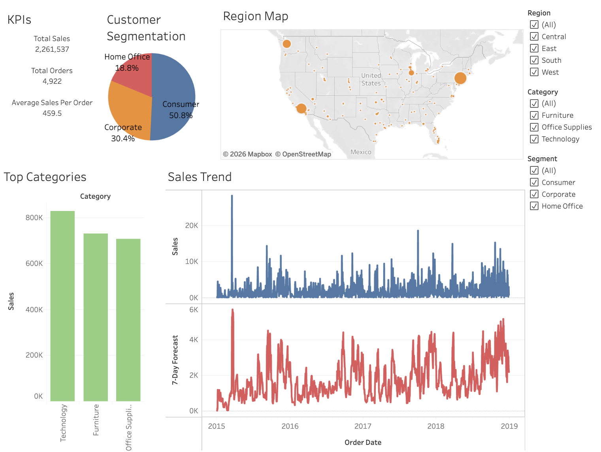
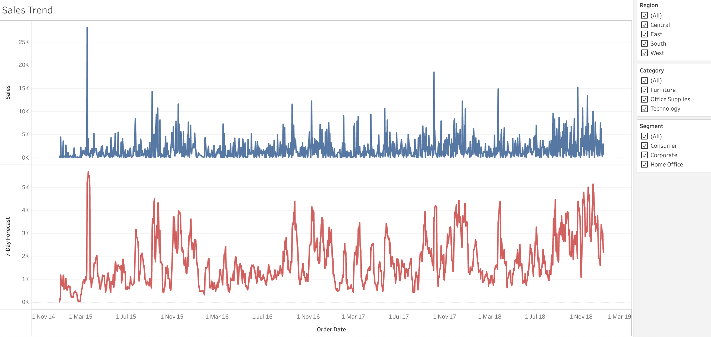

Data and Analytics Portfolio
Master of Data Science professional with experience supporting logistics systems, operational analytics, business intelligence initiatives, and data-driven decision making. Skilled in Python, SQL, Tableau, Power BI, and analytics solutions that transform complex data into actionable insights.
Years of Experience
Featured Project
Dashboarding
Forecasting
Monash Data Science
Featured Project
Business Intelligence · Tableau · Forecasting
Built an interactive Tableau dashboard using a four-year global superstore dataset to analyse sales performance, customer segments, regional distribution, category performance, and short-term sales forecasting.

2,261,537
4,922
459.5
Consumer · 50.8%
Technology
7-Day Sales Forecast

KPI summary · Customer segmentation · Region map · Top categories · Sales trend · 7-day forecast · Region, category, and segment filters
Enables stakeholders to monitor sales performance, identify high-performing segments and categories, explore regional demand, and support short-term planning through forecasted sales trends.
Technical Skills
Python, SQL, R
Pandas, NumPy, Data Cleaning, Exploratory Data Analysis
Tableau, Power BI, Excel, Matplotlib
Scikit-learn, Regression, Classification, Forecasting
Professional Experience
DHL Express · Dhaka, Bangladesh · 2024
Supported logistics and warehouse-related operational systems, developed 30+ automated dashboards and reporting solutions using Power BI and Excel, and contributed to process improvement initiatives across supply chain and logistics workflows.
Codeeureka · Dhaka, Bangladesh · Jun 2023 – Jan 2025
Developed BI dashboards and reporting solutions using Tableau, SQL, and Excel while performing data cleaning, transformation, and operational analysis for business clients.
Ingenia Holidays - Phillip Island · Newhaven, Victoria, Australia · Jan 2026 – Present
Support operational workflows, booking systems, and customer-facing processes while resolving operational issues and coordinating teams to maintain efficient service delivery.
Contact
Open to opportunities in Data Analytics, Business Intelligence, Data Science, and Reporting.
Melbourne, VIC, Australia
tausifjahangir@gmail.com
+61 401 951 750